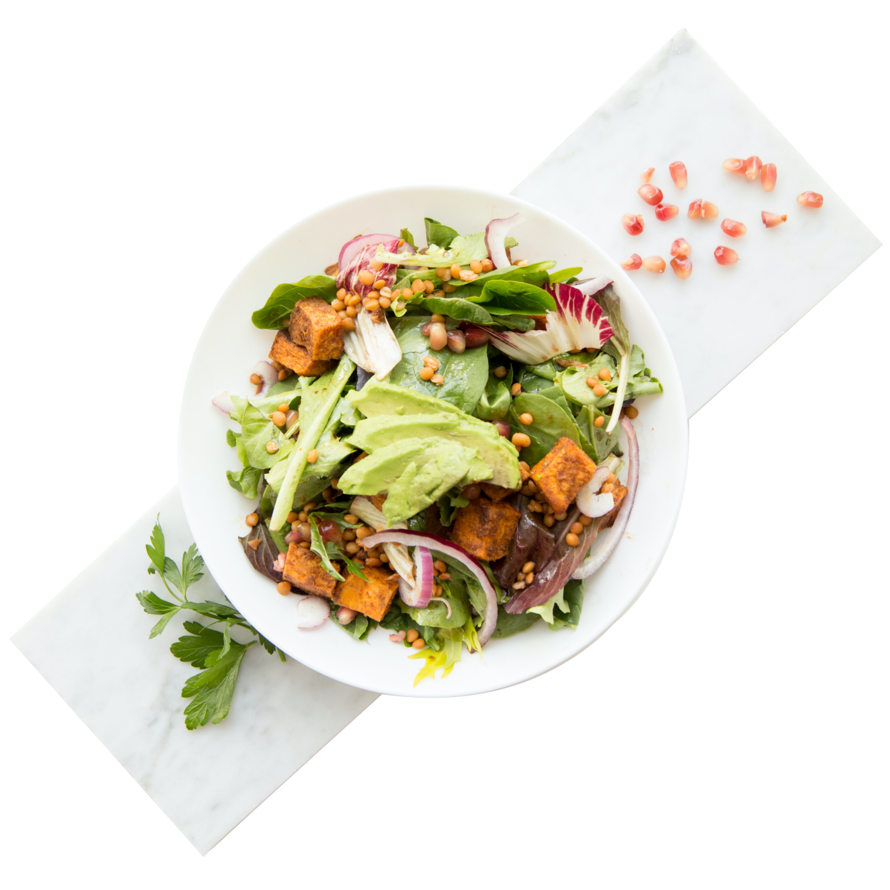

Une salade sur mesure
MONGOO vous permet de composer votre salade selon vos envies et vos goûts. Une quarantaine d'ingrédients frais et préparés le matin même sur place vous sont proposés au quotidien. Depuis maintenant 10 ans, MONGOO fait le bonheur des gourmets et des gourmands, alors pourquoi pas vous ?
